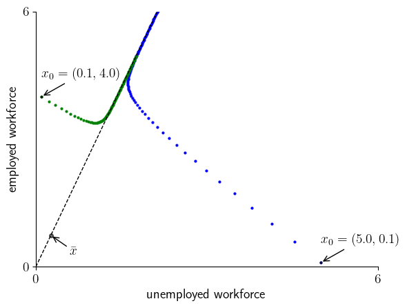
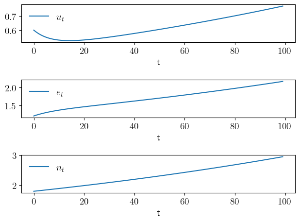

Chapter 2: Operators and Fixed Points#
lake.py#
Show code cell source
import numpy as np
α, λ, d, b = 0.01, 0.1, 0.02, 0.025
g = b - d
A = np.mat(np.array([[(1 - d) * (1 - λ) + b, (1 - d) * α + b],
[(1 - d) * λ, (1 - d) * (1 - α)]]))
ū = (1 + g - (1 - d) * (1 - α)) / (1 + g - (1 - d) * (1 - α) + (1 - d) * λ)
ē = 1 - ū
x̄ = np.array([[ū], [ē]])
print(np.allclose(A * x̄, (1 + g) * x̄)) # prints true
# == Plots == #
import matplotlib.pyplot as plt
import matplotlib.pyplot as plt
plt.rcParams.update({"text.usetex": True, "font.size": 14})
def plot_paths(figname="figures/lake_1.pdf", savefig=False):
path_length = 100
x_path_1 = np.zeros((2, path_length))
x_path_2 = np.zeros((2, path_length))
x_0_1 = 5.0, 0.1
x_0_2 = 0.1, 4.0
x_path_1[0, 0] = x_0_1[0]
x_path_1[1, 0] = x_0_1[1]
x_path_2[0, 0] = x_0_2[0]
x_path_2[1, 0] = x_0_2[1]
for t in range(path_length-1):
x_path_1[:, t+1] = (A * x_path_1[:, t][np.newaxis].T).flatten()
x_path_2[:, t+1] = (A * x_path_2[:, t][np.newaxis].T).flatten()
fig, ax = plt.subplots()
# Set the axes through the origin
for spine in ["left", "bottom"]:
ax.spines[spine].set_position("zero")
for spine in ["right", "top"]:
ax.spines[spine].set_color("none")
ax.set_xlim(0, 6)
ax.set_ylim(0, 6)
ax.set_xlabel("unemployed workforce")
ax.set_ylabel("employed workforce")
ax.set_xticks((0, 6))
ax.set_yticks((0, 6))
s = 10
ax.plot([0, s * ū], [0, s * ē], "k--", lw=1)
ax.scatter(x_path_1[0, :], x_path_1[1, :], s=4, c="blue")
ax.scatter(x_path_2[0, :], x_path_2[1, :], s=4, c="green")
ax.plot([ū], [ē], "ko", ms=4, alpha=0.6)
ax.annotate(r"$\bar{x}$",
xy=(ū, ē),
xycoords="data",
xytext=(20, -20),
textcoords="offset points",
arrowprops={"arrowstyle" : "->"})
x, y = x_0_1[0], x_0_1[1]
#lb = r"\$x_0 = ($(x), $(y))\$"
ax.plot([x], [y], "ko", ms=2, alpha=0.6)
ax.annotate(rf"$x_0 = ({x}, {y})$",
xy=(x, y),
xycoords="data",
xytext=(0, 20),
textcoords="offset points",
arrowprops={"arrowstyle" : "->"})
x, y = x_0_2[0], x_0_2[1]
#lb = r"\$x_0 = ($(x), $(y))\$"
ax.plot([x], [y], "ko", ms=2, alpha=0.6)
ax.annotate(rf"$x_0 = ({x}, {y})$",
xy=(x, y),
xycoords="data",
xytext=(0, 20),
textcoords="offset points",
arrowprops={"arrowstyle" : "->"})
if savefig:
fig.savefig(figname)
def plot_growth(savefig=False, figname="figures/lake_2.pdf"):
path_length = 100
x_0 = 2.1, 1.2
x = np.zeros((2, path_length))
x[0, 0] = 0.6
x[1, 0] = 1.2
for t in range(path_length-1):
x[:, t+1] = (A * x[:, t][np.newaxis].T).flatten()
fig, axes = plt.subplots(3, 1)
u = x[0, :]
e = x[1, :]
n = x[0, :] + x[1, :]
paths = u, e, n
labels = r"$u_t$", r"$e_t$", r"$n_t$"
for (ax, path, label) in zip(axes, paths, labels):
ax.plot(path, label=label)
ax.legend(frameon=False, fontsize=14)
ax.set_xlabel(r"t")
plt.tight_layout()
if savefig:
fig.savefig(figname)
True
plot_paths()

plot_growth()
